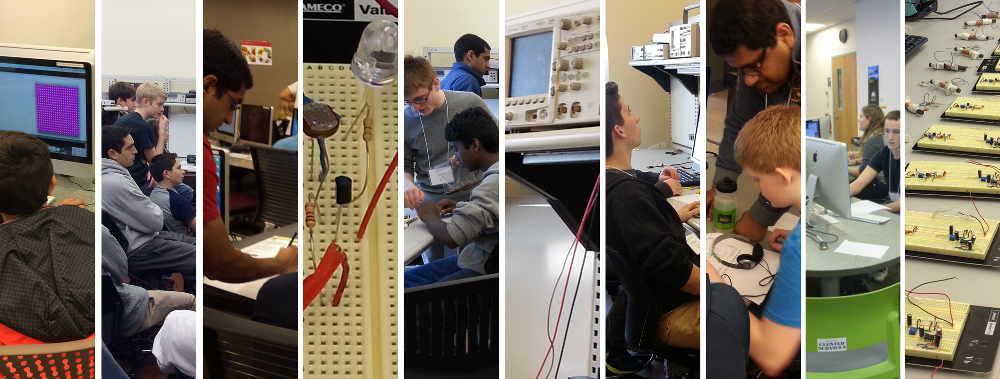

Welcome to the official website of the ECE Outreach Program at Carnegie Mellon University!
We are a organization run by the Electrical and Computer Engineering department of Carnegie Mellon University that aims to provide high school and middle school students with opportunities to learn about and explore engineering through short lectures and hands-on labs. We are run with the help of several volunteer undergraduate and graduate students, professors, and staff at CMU.
All of our materials are available on this website for free!

High school and middle school students come to CMU's campus to learn the fundamentals of electrical and computer engineering in a series of fun lab activities!

ECE Outreach volunteers bring lab materials to host electrical and computer engineering lab sessions at local high schools in the Pittsburgh region!